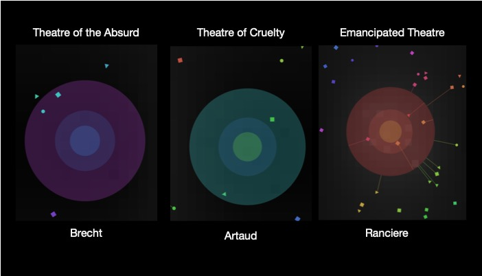

ArtWorld
Artificial Life Simulation for Theatre
See the Pen 2019 DATT5950 Art_world by Hrysovalanti (@Hrysovalanti) on CodePen.
ArtWorld follows the footsteps of a thought experiment that inves- tigates the ontological course of inspiration. The traces of the par- ticular exploration are inscribed by the philosophical literature of four continental philosophers, namely Hegel, Heidegger, Vattimo and Ranciere.
The basis for the design of the interactions that follow the same logic as inspiration supposedly does, is built according to the ex- amples of emotional responses of robotic objects to environmen- tal influences as have been studied by the Italian neuroscientist Valentino Braitenberg in his book Vehicles.
The methodology that was followed for the creation of the particu- lar project is based on the methods apprehended by the design of a class four automata and agent based systems’ modelling.The goal of this project has been to cultivate a framework for the design of a computational system that weaves social with natural phenomena in the work of art.